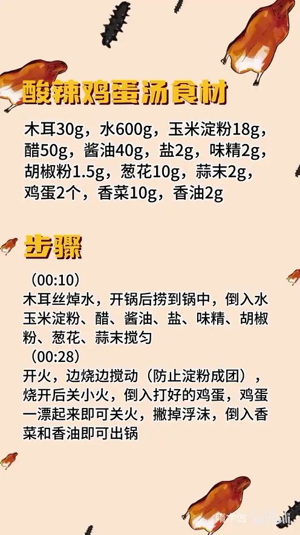

酸辣鸡蛋汤
隋卞一做。木耳丝焯水后直接下锅，与 600g 水、18g 玉米淀粉和醋、酱油等调料一同搅匀，边烧边搅防淀粉成团；烧开转小火淋入 2 个蛋液，蛋花一漂起就关火，撒香菜、香油出锅。
原视频：https://www.bilibili.com/video/BV1vm421g7pu
食材
木耳、玉米淀粉 等 13 样
| 类别 | 用料 | 用量 |
|---|---|---|
| 主料 | 木耳 | 30g |
| 主料 | 水 | 600g |
| 主料 | 玉米淀粉 | 18g |
| 调料 | 醋 | 50g |
| 调料 | 酱油 | 40g |
| 调料 | 盐 | 2g |
| 调料 | 味精 | 2g |
| 调料 | 胡椒粉 | 1.5g |
| 调料 | 葱花 | 10g |
| 调料 | 蒜末 | 2g |
| 主料 | 鸡蛋 | 2 个 |
| 出锅 | 香菜 | 10g |
| 出锅 | 香油 | 2g |
步骤
- 焯木耳：木耳切丝焯水，开锅后捞到锅中。
- 调汤：锅中倒入 600g 水、18g 玉米淀粉、50g 醋、40g 酱油、2g 盐、2g 味精、1.5g 胡椒粉、10g 葱花、2g 蒜末搅匀。
- 烧汤：开火，边烧边搅动，防止淀粉成团；烧开后关小火。
- 淋蛋：倒入打好的 2 个鸡蛋，鸡蛋一漂起来即可关火。
- 出锅：撇掉浮沫，倒入 10g 香菜和 2g 香油即可出锅。
小贴士
- 淀粉要在汤未烧开时下锅并持续搅动，否则容易结成粉疙瘩。
- 蛋液一定要等汤转小火后再淋，火大蛋花会冲散变老。
讲解要点
难度：★☆☆☆☆（新手可做，难点是酸辣比例和蛋花不散）
为什么这么做
- 木耳先焯水再入汤：木耳本身没什么味道、带点生涩，焯一下去异味、定住脆感；开锅一冒就捞，久煮就软烂了。
- 淀粉用冷水调开下锅、边烧边搅：淀粉颗粒先在冷水里散开，受热糊化才均匀；直接撒进热水里必然结疙瘩。
- 先勾芡再淋蛋：汤有了浓度，蛋液进去能悬浮成片；清汤里淋蛋会沉底、散成蛋渣。
- 转小火再淋、淋完先别动：小火让蛋液慢慢凝成大片蛋花，一搅就碎。
- 蛋一漂起来就关火：蛋花刚凝固时最嫩，再滚就老，汤也跟着浑。
- 醋、酱油、胡椒粉配蒜末葱花：酸靠醋、咸鲜底色靠酱油，胡椒给辛香；比例是试过的，才不会一头压一头。蒜末的辣和胡椒的辣层次不同，比只放胡椒更有回味。
- 香菜、香油最后放：香气受热就跑，出锅前撒才闻得到。
容易翻车
- 淀粉直接倒进热水，一锅粉疙瘩。
- 汤大滚时淋蛋，蛋花被冲散，汤发浑。
- 淋完立刻搅动，蛋花碎成渣。
- 蛋花煮过头，变老、汤也浑。
- 嫌不够酸辣就猛加醋和胡椒，比例失衡，不是齁酸就是糊辣。
原片尾卡

原片文案
AI 字幕校准稿
两分钟教你们做一道家常菜，今天做的是酸辣鸡蛋汤。全网教程我给你们翻遍了，能简化的都给你们简化了，现在这个版本就是全网最简单的。木耳丝焯一下，增加颜色又增加口感，其他配料您喜欢什么您就放什么，只是开锅一冒就行了，然后把它捞到锅里边。
水里边把屏幕上这些调料不论先后顺序，全部都倒里边，使筷子给它搅匀。跟你们说的比例都是试过很多次的，很精准的比例，绝对让你们的酸辣口调得非常精准。水呢边烧边搅动，防止淀粉成团，烧开了之后就要关小火了。
最后把鸡蛋就要撒进去了。撒完了之后呢，先别着急动，先让鸡蛋定型，鸡蛋一漂就可以了，关火。上面一点点的浮沫可以给它撇一下，然后把香菜撒上边，香油浇上，这算好了。
刚才都已经喝了半锅了，真好喝。它不光有胡椒粉的辣，还有一点蒜末的辣。咱们有时候出去喝这个酸辣汤，你觉得它就是水、酱油、醋、胡椒粉，但是你喝这个搁点蒜和葱，你喝它就不一样味了。其实酸辣口还特别不好调，大家如果按照我们这个比例来，这绝对是一道特别好喝又舒服的懒人菜。喜欢吃辣的，您可以多放点胡椒粉。
整理自「隋卞一做」系列视频，仅供个人学习。